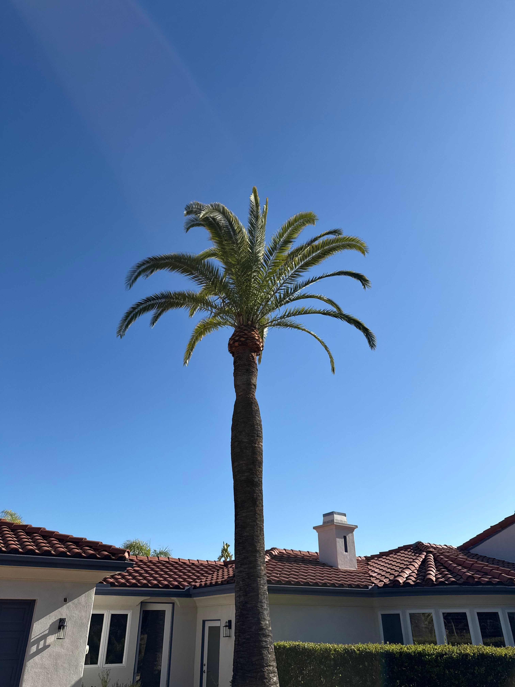
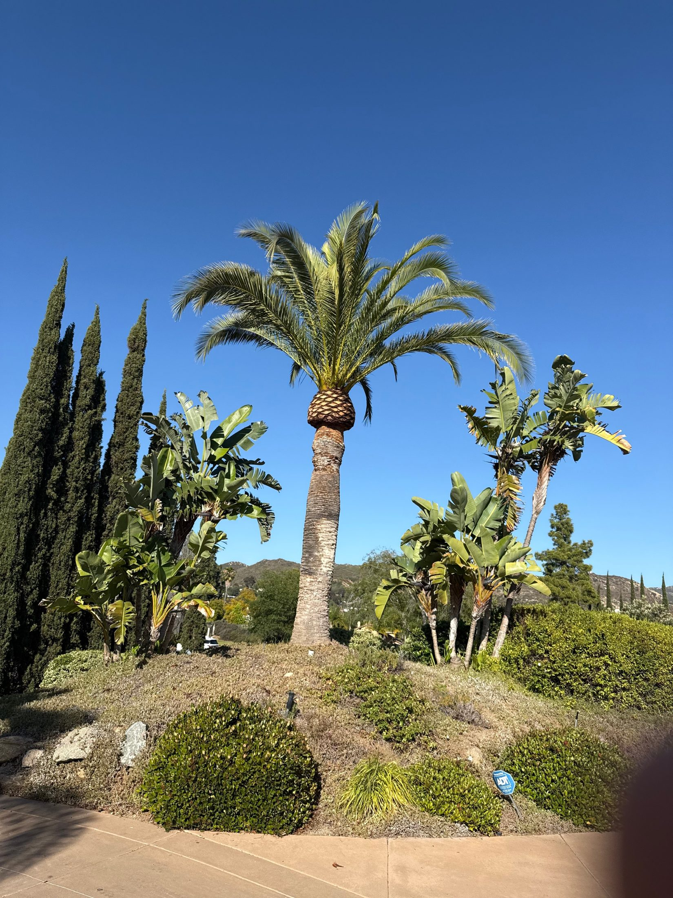

Keep your palms healthy, green, and protected year-round in North County San Diego.
Preventative treatment, monitoring, and protection for valuable palm trees — including protection against South American Palm Weevil.
Call or Text for a Free Palm Assessment ⭐ Find Us on GoogleText or email photos of your palm for a free first look. Local owner-operated palm protection service focused on preventative care and long-term palm health.
Valuable palms can decline from pest pressure, irrigation problems, nutrient issues, poor pruning, and disease. Early attention is usually easier and less expensive than waiting until a palm is visibly collapsing.



A simple, local, palm-focused service for homeowners who want to protect the look and value of their landscape.
Focused on palm health, prevention, and protection — not just general yard work.
Text or email photos first so we can quickly evaluate visible concerns.
Local monitoring for South American Palm Weevil risk and visible decline patterns.
Direct communication with a local North County homeowner, not a call center.
Designed to help protect valuable palms before removal becomes the only option.

Basic Palm Health Protection – Starting at $200
Free assessment before treatment. I’ll take a look first and recommend the right option for your palms.
Enhanced Palm Protection
Treatment recommendations depend on palm type, size, condition, access, irrigation, and visible risk factors.
Serving Old Poway, Lake Poway, Historic Escondido, South Escondido, Lake Hodges, Via Rancho Parkway estate neighborhoods, and nearby North County communities.
Text or email photos of your palms for a free assessment and treatment recommendation. Include a full photo of the palm, a close-up of the crown if visible, and any areas that look brown, thinning, wet, damaged, or unusual.
📧 Send Palm Photos 📞 Call or Text 262-492-3135Concerned about a palm? Text photos for a free first look.
Email: sandiegopalmprotection@gmail.com
Local owner-operated palm protection service focused on preventative care and long-term palm health.